How to use this lesson
§0 · From last time. Lesson 1.2 gave us the historical lineage: which prior failure modes LLM agents solve, which they don't, and which new ones they introduce. Daniel's answer to the CRO used a "failure modes inherited / introduced / mitigated" structure. Now we need to operationalise that into a prospective decision tool — given a new task, how do you choose between a workflow, a pipeline, and an agent before deploying it?
Business Scenario
Acme E-Commerce HQ, Tuesday standup.
Ronnie Park (head of CX) walks into Lin Chen's standup with a problem:
"I've got two backlogs eating my team alive. The first is refund processing — 12,000 requests a week, 90% of them fit the same five patterns. The second is what we call 'weird issues' — escalations Tier 1 can't handle. 800 a week, each one different. Same AI for both? Different? I'm getting four different vendor pitches and I can't tell what I'm comparing."
Lin needs to give Ronnie a framework, not a vibe. The framework needs to:
- Take any task description and produce a workflow / pipeline / agent recommendation.
- Be defensible to procurement (i.e. not "we picked X because it felt right").
- Account for the cost of agency — the operational debt taken on when dialling up autonomy.
Bridge to Topic
The vendors are selling three architecturally different things using overlapping marketing. To choose well, Lin needs a five-question test that takes only minutes per task and produces a defensible recommendation. The five questions are derived from the cost-of-agency lessons in 1.1 and the historical failure modes in 1.2.
Mind Map

Mermaid source
mindmap
root((Choose Architecture))
Workflow
Fixed graph
Closed input space
Predictable failure
Low cost per task
Pipeline
Linear transform
Each step pure function
Easy to debug
No backtracking
Agent
Open input space
Runtime decisions
Higher variance
Justified by ambiguity
Five Questions
Q1 Input enumerable
Q2 Sequence pre-knowable
Q3 Failure cost bounded
Q4 Time budget tight
Q5 Natural-language ambiguity
Cost of Agency
Predictability
Auditability
Debugging
Cost per task
Takeaway: there are exactly three architectures and exactly five questions to choose between them. The vendor pitches are noise on top.
Elaboration
4.1 The three architectures, precisely
Workflow. A directed graph of steps. Branches are conditioned on rule outputs. The graph is fully specified at design time. Examples: a refund-approval flow with rules on amount, reason, and customer tier. Mature implementations: BPMN engines, Temporal, Airflow.
Pipeline. A linear sequence of pure transformations $f_n \circ f_{n-1} \circ \ldots \circ f_1$. Each $f_i$ takes input, produces output, has no side effects on flow. No branches, no loops. Examples: ETL jobs, RAG ingestion (chunk → embed → index), classifier serving (preprocess → predict → postprocess).
Agent. As defined in 1.1 — the LLM dynamically owns which step is next, when to stop, and possibly the goal. Open input space, runtime decisions, agency dial ≥ 2.
The crucial point: these are not points on a spectrum. They are architecturally distinct. A workflow can contain LLM-as-function steps (pipeline element), and an agent can be invoked from inside a workflow node. But the controlling structure is one of three.
4.2 The five questions, derived
For any task, answer these five yes/no questions:
Q1 — Is the input space enumerable? Can you list, in advance, the structurally distinct inputs the system will see? If yes, you're in closed-world territory. Workflow or pipeline. Refund requests with five canonical patterns: yes. Customer escalation emails: no.
Q2 — Is the action sequence pre-knowable? Given a valid input, is the sequence of operations the same every time? If yes, pipeline is the cheapest and most reliable choice. If branches are needed but bounded, workflow. If the sequence depends on what the system discovers as it runs, agent.
Q3 — Is the failure cost bounded? If the system gets it wrong, what's the maximum downside? If bounded and small, agent autonomy is acceptable. If unbounded or catastrophic (financial, safety, legal), keep a human gate or stay with workflow. This is independent of Q1 and Q2 — even if you need an agent's flexibility, an unbounded blast radius means you wrap it.
Q4 — Is the time budget tight? Is there a sub-second SLA? Agents are slower than workflows by an order of magnitude (LLM round-trip × loop steps). If users wait synchronously, default to workflow. If async or background, agent is viable.
Q5 — Is the task ambiguous in natural language? Could two reasonable humans interpret the task differently? If yes, you need natural-language reasoning capacity — i.e. an LLM in the loop. If no, formal rules suffice.
4.3 The decision logic
if Q1 and Q2 and Q4:
pipeline # closed-world, fixed sequence, fast
elif Q1 and not Q2:
workflow # closed-world, bounded branching
elif not Q1 and Q5:
agent (with Q3-derived guards) # open-world, ambiguous
elif not Q1 and not Q5:
workflow + classifier # open-world but unambiguous
elif not Q3:
workflow + human-in-the-loop # unbounded failure cost dominates
The if/else above is the entire 1.5 hours of this lesson compressed into ten lines. The next 30 minutes are spent making sure you ask Q1–Q5 correctly, because each one has a common mistake.
4.4 The common mistakes per question
Q1 mistake: confusing input format with input space. A JSON schema makes the format enumerable but the space (semantic content of the fields) may not be. Customer escalation tickets are JSON-shaped but their content is open-world.
Q2 mistake: assuming sequence is fixed because the happy path is short. Most tasks have a 5-step happy path and a 50-branch error-handling tree. If you have to handle errors dynamically, you don't have a fixed sequence.
Q3 mistake: thinking the failure cost is the immediate output's cost. It's the downstream consequence. An incorrect refund of $20 has a cost of $20; an incorrect refund that gets cited as precedent has a cost of (∞ × your policy library). Think in blast radius.
Q4 mistake: building a "fast agent" by paralleling tool calls. This caps speedup at the slowest tool. If you have a 200ms SLA, you don't have time for the model to think.
Q5 mistake: dismissing ambiguity because you've written a specification. The question is whether two reasonable humans would interpret the task the same way. Specifications get out of date; humans encountering the task fresh don't read your spec.
Problem Statement
Apply the five-question framework to all seven of these real Acme/HSBC/Helix scenarios. For each, answer Q1–Q5, then state the recommended architecture and one justification.
- Acme refund processing — process 12k requests/week against published refund policy.
- Acme weird-issue escalations — 800/week, each one different, must resolve without breaching CSAT.
- HSBC SWIFT break classification — 1,400 breaks/night, ~70% recurring patterns, ~30% novel.
- HSBC daily P&L commentary — generate the morning-after narrative explaining the trading book's overnight movement.
- Helix literature triage — score new PubMed abstracts for relevance to the active research projects.
- Helix hypothesis generation — propose drug-target interactions worth experimentally validating.
- HSBC KYC document review — extract structured fields from corporate-customer onboarding documents.
Solution Walkthrough
| # | Scenario | Q1 | Q2 | Q3 | Q4 | Q5 | Recommendation |
|---|---|---|---|---|---|---|---|
| 1 | Acme refund processing | ✅ | ✅ | ✅ (bounded) | ✅ | ❌ | Workflow with LLM-classification step for reason categorisation. Five rules cover 90%; agent for the 10% tail is overkill. |
| 2 | Acme weird escalations | ❌ | ❌ | ✅ (CSAT-bounded) | ❌ | ✅ | Agent (dial 3). Ambiguous, open-world, async — exactly the case agents are for. Cap step count and refund authority. |
| 3 | HSBC break classification | partial (70%) | ❌ | ✅ | ❌ | ✅ | Hybrid: workflow + agent fallback. Rule-based for the 70% known patterns; agent investigates the 30% tail. This is Sherpa. |
| 4 | HSBC daily P&L commentary | ❌ | ❌ | ✅ | ✅ (7am deadline) | ✅ | Agent (dial 2) — Plan-and-Solve. Plan once at the start (which positions to comment on), execute as pipeline. Tight time budget rules out free-form ReAct loops. |
| 5 | Helix literature triage | ❌ | ✅ | ✅ | ❌ | ❌ | Pipeline with LLM scoring step. Inputs vary, but the per-paper sequence is fixed. No need for agent flexibility. |
| 6 | Helix hypothesis generation | ❌ | ❌ | ❌ (mis-cite → $4M experiment) | ❌ | ✅ | Agent with hard human gate. Q3 (unbounded cost) forces human sign-off; agent does generation + evidence, human decides commitment. |
| 7 | HSBC KYC document review | partial | ✅ | partial | ❌ | partial | Workflow + LLM extraction + human review. Format-enumerable, sequence-fixed, but blast radius (false KYC) is too high to remove the human. |
Pattern: scenarios cluster naturally. The "agent-shaped" ones (#2, #6) share open input space + ambiguity. The "pipeline-shaped" ones (#5) share fixed sequence + bounded variation. The "workflow-shaped" ones (#1, #7) share enumerable patterns + bounded failure. And the hybrid ones (#3, #4) are where the interesting architectural work lives.
Lin's recommendation to Ronnie: "For refund processing — workflow with a small LLM step. We don't need an agent. For weird escalations — agent, with a $X refund cap and an escalation-back-to-human after N attempts. Two different products, not one. The vendor that's selling you 'one platform for both' is selling you compromise; they will under-engineer the refund flow and over-engineer the escalations."
Mathematical Foundation
7.1 Expected utility with variance
Given a task, compare two architectures by expected utility:
$$ U(M) = \mathbb{E}[\text{value}] - \mathbb{E}[\text{cost}] - \lambda \cdot \text{Var}[\text{outcome}] $$
where $\lambda \geq 0$ is the risk-aversion parameter. The variance term is what makes agents costly: they have higher $\mathbb{E}[\text{value}]$ for ambiguous tasks but also higher $\text{Var}[\text{outcome}]$.
For risk-neutral deployments (Acme refunds, where one bad refund is shrugged off), $\lambda \approx 0$. Choose by expected value. For risk-averse deployments (HSBC KYC, Helix hypotheses, anything regulated), $\lambda$ is large. Even if an agent has higher expected value, its variance may push utility negative.
7.2 Why the dial setting maps to variance
From Lesson 1.1's information-theoretic view, conditional action entropy $H(a_t | o_{1:t})$ rises with the dial setting. Variance of outcomes scales with action entropy (loosely — there's more decision surface for error). Formally, for many task classes:
$$ \text{Var}[\text{outcome}] \approx c \cdot H(a_t | o_{1:t}) $$
with $c$ task-dependent. This is the formal version of "higher dial = higher variance = costlier under risk aversion." Q3 in the framework is essentially asking what's your $\lambda$?
7.3 The five questions as a decision-tree classifier
You can frame Q1–Q5 as features and the architecture as a label. With ~50 real cases (the seven above × ~7 historical) you can fit a tiny decision tree, and the result is exactly the if/else logic in 4.3. The framework isn't magic — it's a hand-engineered decision tree on the load-bearing features of the task.
Technical Deep-Dive
8.1 The two anti-patterns
Anti-pattern 1: "Agentified workflow" — taking a working workflow and replacing its dispatcher with an LLM "because it's smarter." You inherit the agent's latency and cost (worst case: 5–10× slower, 50× more expensive per call) and the workflow's lack of flexibility (the agent can only do what the workflow already allowed). You get the worst of both. Diagnosis: someone read a blog post about agents and felt left behind.
Anti-pattern 2: "Workflowed agent" — taking an open-ended agent task and chopping it into a fixed graph "to make it predictable." You lose the agent's ability to handle inputs you didn't anticipate (the entire reason you used an agent) and gain marginal predictability (the LLM still hallucinates within each node). Diagnosis: stakeholders demanded a flowchart and someone delivered one regardless of whether it modelled the actual task.
8.2 The hybrid pattern (the production reality)
Real systems are hybrids. The most common production architecture for ambiguous-but-regulated tasks (HSBC's break classification, Helix's hypotheses, regulated insurance claims) is:

Mermaid source
graph LR
Input[Input] --> Gate{Known<br/>pattern?}
Gate -->|yes 70%| Wf[Workflow]
Gate -->|no 30%| Agent[Agent]
Wf --> Out[Output]
Agent --> Out
Agent -.escalate.-> Human[Human review]
Human --> Out
classDef workflow fill:#cfc,stroke:#393
classDef agent fill:#ffd,stroke:#a80
classDef human fill:#fee,stroke:#c33
class Wf workflow
class Agent agent
class Human human
Cheap workflow handles the bulk; agent handles the tail; human handles the tail of the tail.
This is the architecture Sherpa will adopt in Module 4. The "Gate" decision is itself a classifier (small, cheap, deterministic) — not an agent, because making it an agent recurses the problem.
8.3 Operational cost comparison (typical, illustrative)
| Architecture | Cost/task | Latency p95 | Maintenance | Failure-debug time |
|---|---|---|---|---|
| Workflow | $0.001 | 200 ms | Rule updates per quarter | Minutes (trace is a graph) |
| Pipeline (with LLM step) | $0.01 | 800 ms | Prompt updates per month | Minutes (linear trace) |
| Agent (dial 3) | $0.10–$0.50 | 8–30 s | Eval set + prompt updates weekly | Hours (loop introspection) |
| Multi-agent | $0.50–$5.00 | 30 s–5 min | Eval + interaction-pattern updates | Days (cross-agent debugging) |
These numbers are illustrative but order-of-magnitude correct. They explain why "just make everything an agent" is wrong: the cost gradient is 100–1000×.
What This Unlocks
- Lesson 1.4 introduces the four major LLM-agent paradigms (ReAct, Reflexion, Plan-and-Solve, CodeAct). With the framework in hand, you'll be able to match paradigm to task instead of choosing on novelty.
- Module 4 builds Sherpa as the hybrid pattern in 8.2 — rule-based gate, agentic tail. The five-question framework is what justified the architectural choice.
- Module 11 turns the framework into a business-case template: every vendor pitch maps to a Q1–Q5 answer set and a cost row from §8.3. You'll be the Lin Chen of your own org.